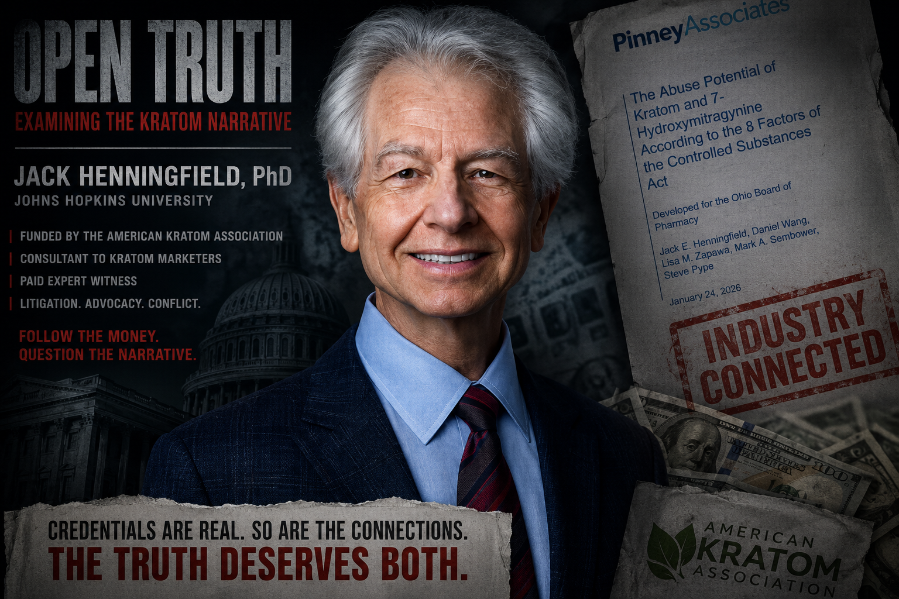
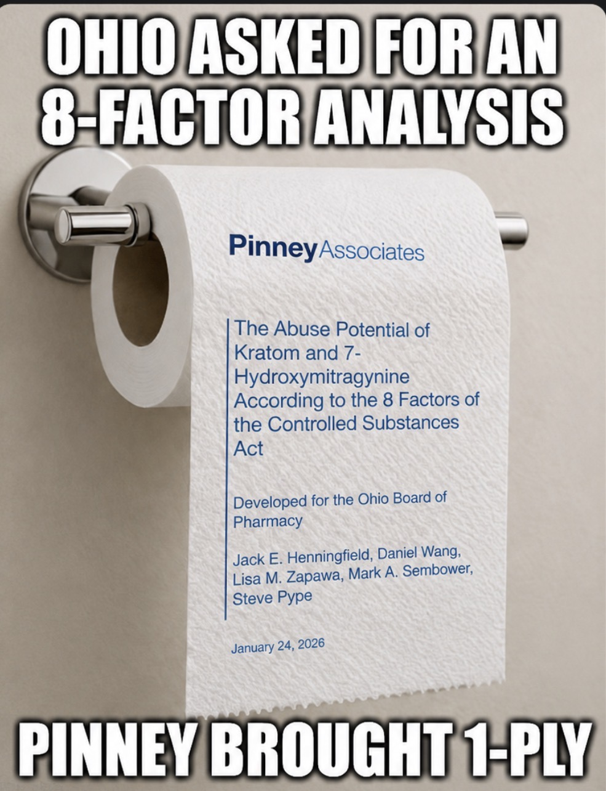
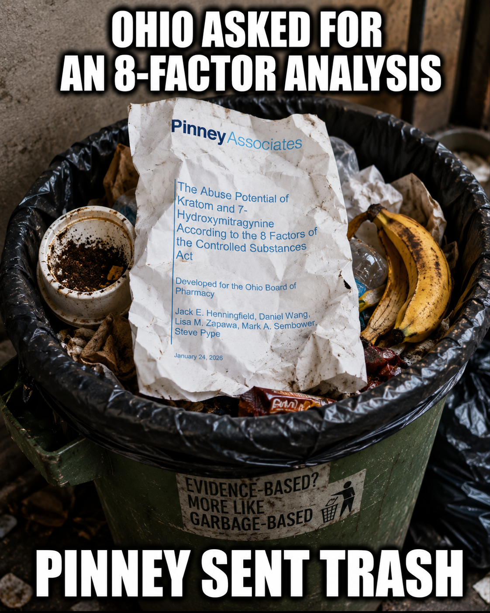
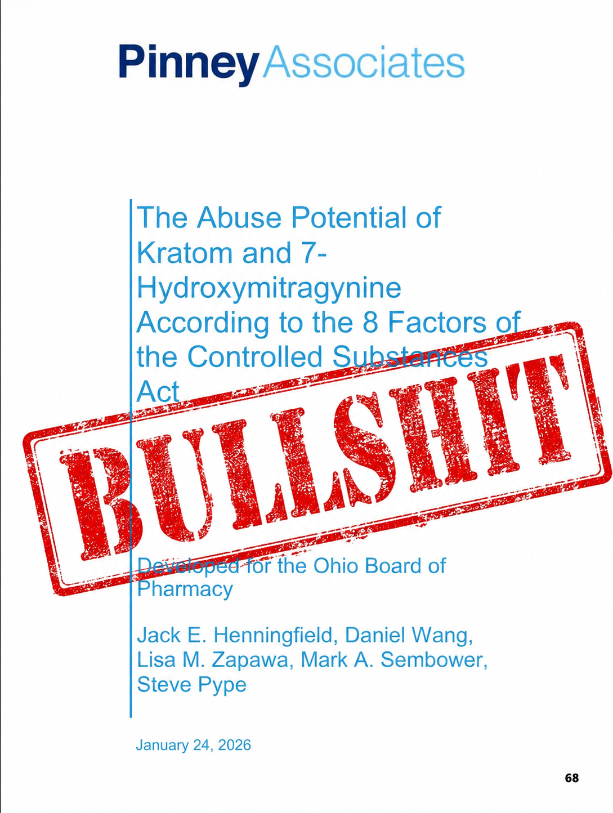

Jack Henningfield has serious credentials.
That is precisely why his January 2026 Pinney Associates kratom report deserves serious scrutiny.
The report was presented as an eight-factor Controlled Substances Act analysis for the Ohio Board of Pharmacy.
Then you reach the disclosures.
And suddenly the room gets considerably smaller.
The report says it was funded by the Center for Plant Science and Health, a nonprofit established by the American Kratom Association.
Pinney Associates consults for that organization.
Henningfield has worked "in support of the American Kratom Association."
Pinney Associates also consults to developers and marketers of kratom leaf products.
Henningfield is a paid expert witness in kratom litigation. Pinney Associates 2026.pdf
After examining the eight factors, Henningfield and his coauthors recommend that Ohio not schedule natural kratom or mitragynine and instead preserve access under a regulatory approach resembling Kratom Consumer Protection Acts. Pinney Associates 2026.pdf
What an astonishing coincidence.

Henningfield's report acknowledges that mitragynine is metabolized into 7-hydroxymitragynine in humans.
It acknowledges 7-OH's potent mu-opioid-receptor activity. Pinney Associates 2026.pdf
And its policy recommendation?
So control the potent metabolite.
Keep selling the substance that produces it after ingestion.
The report's own FAERS table lists:
Its poison-center data list 1,645 kratom cases in 2024, including 1,027 single-substance exposures. Pinney Associates 2026.pdf
And then:

The report also cites research finding 25.5% of one study population met criteria for current kratom use disorder.
Among another sample of near-daily users:
Yet elsewhere the report characterizes use among many consumers as "daily self-maintenance or self-therapeutic, similar to caffeine dependence." Pinney Associates 2026.pdf
Henningfield's own report acknowledges that no kratom product has been submitted to FDA for approval as a new drug and that FDA does not recognize kratom as having commonly accepted medical use. Pinney Associates 2026.pdf
Yet continued access is presented as being "in the interest of public health." Pinney Associates 2026.pdf
But plenty of confidence about keeping it available.

The problem with this report isn't that Jack Henningfield has industry relationships.
The problem is that those relationships become extremely relevant when the report reaches conclusions favorable to the same commercial and advocacy ecosystem disclosed on page four.
The funding matters.
The consulting matters.
The paid expert-witness work matters.
And the report's own inconvenient evidence certainly matters.
Yet somehow, after 68 pages, natural kratom emerges exactly where the American Kratom Association would presumably like it:
Ohio asked for an eight-factor scientific analysis.
It should read the disclosures before believing the ending.
The documents and images below are presented so readers can examine the source material directly. Descriptions summarize the contents; readers are encouraged to review the underlying records themselves.
{kind=link}
{kind=link}
{kind=link}
{kind=link}
{kind=link}